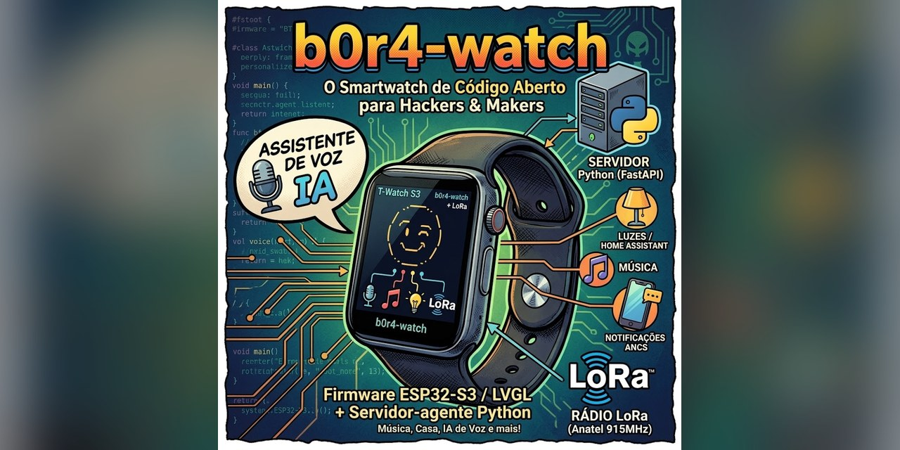

b0r4-watch
Um smartwatch pessoal de código aberto, construído do zero no LILYGO T-Watch S3.
Firmware ESP32/LVGL no pulso + servidor-agente Python (FastAPI) com IA de voz, música e automação de casa.


🕐O que é isso?
Um smartwatch que você mesmo constrói e programa. Em vez de um relógio pronto com sistema fechado, o b0r4-watch usa a placa de hardware aberta LILYGO T-Watch S3 — pequeno computador com tela touch, acelerômetro, microfone, Bluetooth, Wi-Fi e rádio LoRa — e um software escrito aqui mesmo, em duas partes que conversam entre si:
1. O "cérebro" do relógio (firmware/) — roda na placa, controla tela, sensores e o que aparece no pulso.
2. Um "assistente" em casa (server/) — Python no seu computador ou servidor, dá poderes extras: entender sua voz, tocar música, controlar luzes e responder com IA.
Tudo aberto e feito à mão: sem apps proprietários, sem nuvem obrigatória, sem caixa-preta. Ideal para aprender, hackear e personalizar.
✨Funcionalidades
| Funcionalidade | Status |
|---|---|
| Avatar ASCII animado na tela (LVGL) | ✅ |
| Assistente de voz completo (ouvir → pensar → responder em áudio) | ✅ |
| Providers de IA configuráveis (openai / mock / edge_tts) | ✅ |
| Teste do pipeline sem o relógio físico (modo mock) | ✅ |
| Bare metal: flash, tela, RTC, sleep | 🔮 |
| LVGL launcher + temas visuais | 🔮 |
| Notificações do iPhone (ANCS via BLE) | 🔮 |
| Música (ytmusicapi + media keys + A2DP) | 🔮 |
| Automação de casa (ESPHome / Home Assistant) | 🔮 |
| IA híbrida (WakeNet9 + MultiNet + cloud) | 🔮 |
| Hacker: IR, LoRa, Wi-Fi scan | 🔮 |
📐Decisões arquiteturais
🗺️Roadmap
- 1Setup (Fase 0) — estrutura do projeto, compilar sem placa, avatar animado ✅
- 2Bare metal — flash, tela, RTC, sleep
- 3LVGL launcher + temas — menu de apps e temas visuais
- 4ANCS (iPhone) — notificações via BLE
- 5Música — ytmusicapi + media keys + A2DP
- 6Casa — ESPHome / Home Assistant
- 7IA híbrida — WakeNet9 + MultiNet + cloud
- 8Hacker — IR, LoRa, Wi-Fi scan
- 9Futuro — GPS shield, wake word always-on, TLS
📁Estrutura do repositório
b0r4-watch/ ├── firmware/ # Plataforma T-Watch S3 (Arduino + PlatformIO + LVGL) │ └── src/avatar/ # sistema de avatar ASCII (7 emoções + modifiers) ├── server/ # Servidor-agente Python (FastAPI + WebSocket + MQTT) │ ├── main.py # endpoints REST + WebSocket /ws/audio │ └── src/ # asr · llm · tts · music · lights · tools └── docs/ # ADRs (decisões arquiteturais) + glossário
🚀Como começar
Firmware: cd firmware && pio run — a primeira execução baixa as dependências (~500 MB) e compila o ESP32 Arduino core. Com o relógio em modo download: pio run --target upload.
Servidor: cd server, python -m venv .venv, pip install -r requirements.txt, copy env.example .env, uvicorn main:app --reload. O endpoint /health responde em localhost:8000/health.
Testar sem o relógio: rode o servidor e python scripts/test_client.py — envia 1 s de silêncio e mostra a resposta do pipeline (modo mock, sem gastar nada).
👤Sobre o autor
Leonardo Bora (The Neuromancer) — desenvolvedor e estudante em Curitiba, Brasil. Construindo o b0r4-watch do zero, do hardware ao software.
Gostou do projeto? Um café ajuda a manter o desenvolvimento. ☕